ND-spot calibration
Current reproducible workflows · comparison of calibration inputs
Both calibrations estimate ρ with the same ND-spot principle. The key distinction is which White/Black measurements are used, and how many pairs are processed. The underlying calibration MAT also changes, so differences cannot be attributed to measurement date alone.
ρ (2509)
2025-09-24 · SN8028
Before/after ND processing of the SRFA experiment
Estimate ρ separately from the pairs before and after SRFA. Do not average the two estimates.
SRFA is the sample used to inspect the absorption response to ρ; it is not an input to the ρ calculation.
ρ (2602)
2025-11-12 · CMAR · SN8028
First White/Black pair from a culture experiment day
The restored workflow estimates one ρ from the first pair. It does not average multiple days or start/end pairs.
2602 labels the February 2026 processing version. The raw measurements were collected on 12 November 2025.
2509 · SRFA start/end pairs
End White + end Black → ρ (2509, end)
Same SRFA + same DI reference → compare factory / start / end absorption
The start and end White/Black pairs are processed independently. The current run_hypera_250924 workflow uses SN8028 only; the SN8019 measurements in the historical package are not inputs to the batch ρ. The SRFA comparison holds the sample and DI reference fixed while changing ρ.
Source MAT: SN8028_CAL_20240426_Updated20250911.mat · 300–750 nm · 91 wavelengths
2602 · First CMAR pair
Derived ρ → apply to Hyper-a absorption processing for each experiment
The current run_hypera_2602 selects CMAR White at 15:04:45 and Black at 14:59:44. The multi-day and crossed-pair comparisons in the February meeting package are background sensitivity studies, not a pooled input to this workflow. Distinguish the ρ already stored in the MAT from the new NewRho calculated from this pair.
Source MAT: SN8028_CAL_20240426_Updated20260219.mat · 300.111–710.017 nm · 1,082 wavelengths
Role in the current batch comparison
P01_bulk_hypera applies factory · 2509 · 2602 ρ to the same Hyper-a sample and MILQ reference. The default 2509 selection is the start pair, not an average of start and end. The 2602 selection comes from the single CMAR pair above.
Only ρ is replaced in the common base calibration. The 2509 mapping uses exact wavelength matches; 2602 uses linear interpolation within the overlap. Unsupported 2602 wavelengths remain NaN, without extrapolation.
ACS overlay = median(DIL1B_FTS) − median(MILQ_FTS)
ACS is not used to estimate or fit ρ. The new overlay subtracts per-wavelength medians of all records. MILQ_FTS is the default; changing referenceRole selects that MILQ reference. JSON selection ranges and additional scattering corrections are not applied. These settings differ from the historical ACS presentation plots below.
Both reconstruction workflows use 23 °C as a configured value, not recovered measurement temperatures. Dense wavelength sampling does not establish 2 nm optical resolution, and a newer version alone does not demonstrate better accuracy.
2509 · Input files and code
- Start White input (DI filename):
HA_2025-09-24_19-16-33_complete8028_DI.bin - Start Black:
HA_2025-09-24_19-25-19_complete8028_black.bin - SRFA:
HA_2025-09-24_19-33-58_complete8028_SRFA.bin - End White input (DI filename):
HA_2025-09-24_19-40-44_complete8028_DI.bin - End Black:
HA_2025-09-24_19-46-22__complete8028_black.bin
run_hypera_250924.m · P01_bulk_hypera.m · loadNewRho.m
Input interpretation: following the user’s interpretation and the code’s input assignment, this document treats the 2509 DI files as White-plug measurements. Original filenames are retained.
2602 · Input files and code
- White:
HA_2025-11-12_15-04-45.bin - Black:
HA_2025-11-12_14-59-44.bin
run_hypera_2602.m · P01_bulk_hypera.m · loadNewRho.m
Input interpretation: following the user’s interpretation and the code’s input assignment, this document treats the 2509 DI files as White-plug measurements. Original filenames are retained.
Local batch figures · three rho choices and ACS
These are unchanged PNGs from the local run 20260930_132008_976. Each figure compares factory, 2509 and 2602 absorption for DIL1A/B with ACS FTS minus MILQ_FTS. These shared comparisons are shown once here; they are not results for only one calibration.
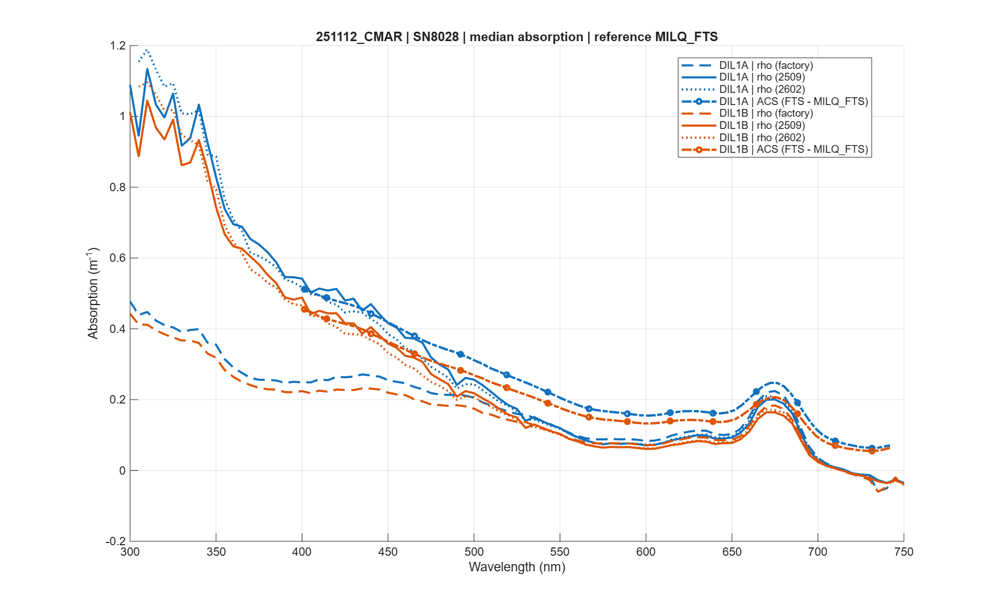
harrison/box_folders/main/results_bulk/20260930_132008_976/251112_CMAR/20251112_CMAR_comparison.pngFigures from the other six experiments
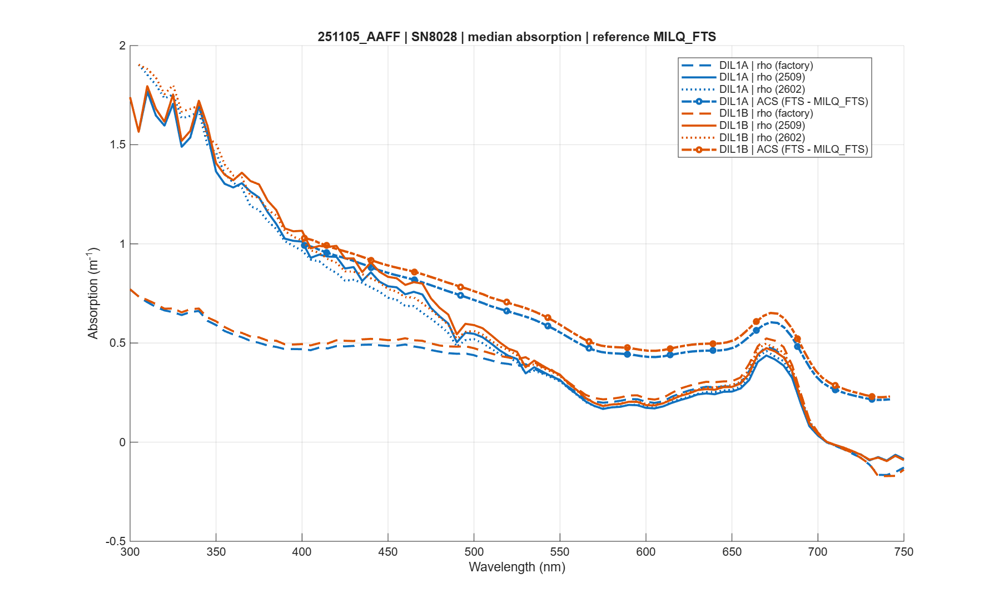
harrison/box_folders/main/results_bulk/20260930_132008_976/251105_AAFF/20251105_AAFF_comparison.png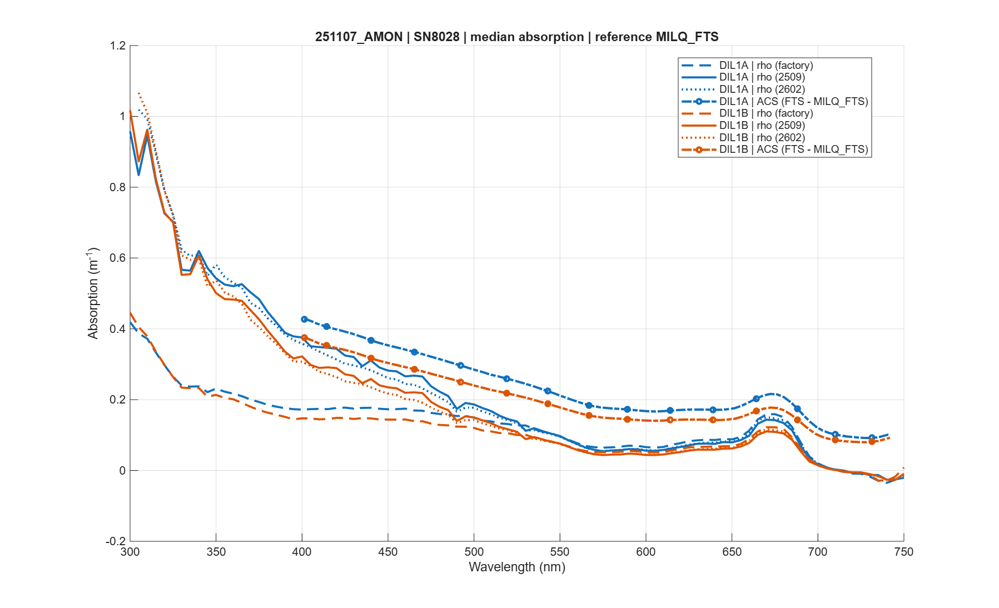
harrison/box_folders/main/results_bulk/20260930_132008_976/251107_AMON/20251107_AMON_comparison.png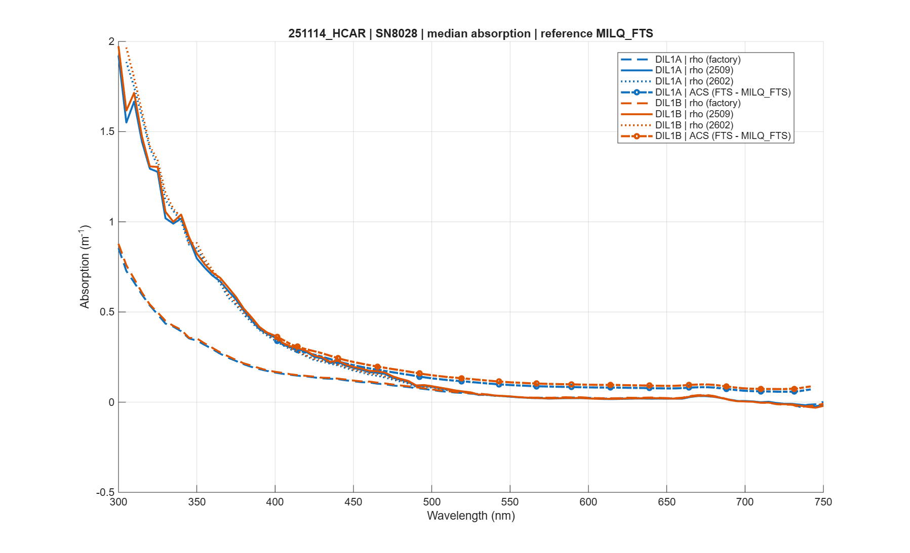
harrison/box_folders/main/results_bulk/20260930_132008_976/251114_HCAR/20251114_HCAR_comparison.png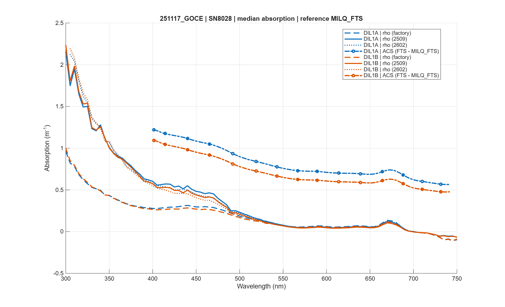
harrison/box_folders/main/results_bulk/20260930_132008_976/251117_GOCE/20251117_GOCE_comparison.png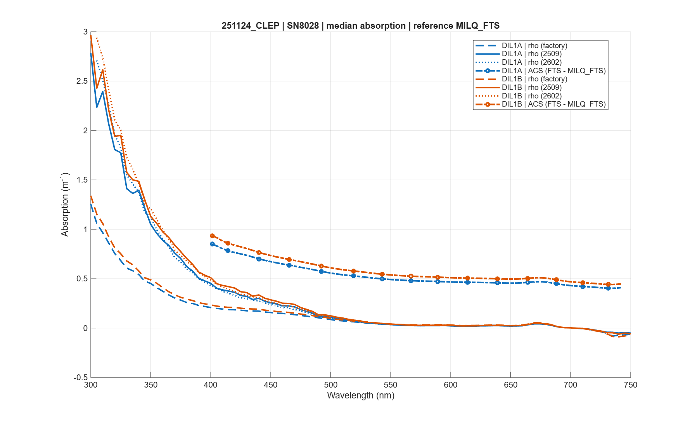
harrison/box_folders/main/results_bulk/20260930_132008_976/251124_CLEP/20251124_CLEP_comparison.png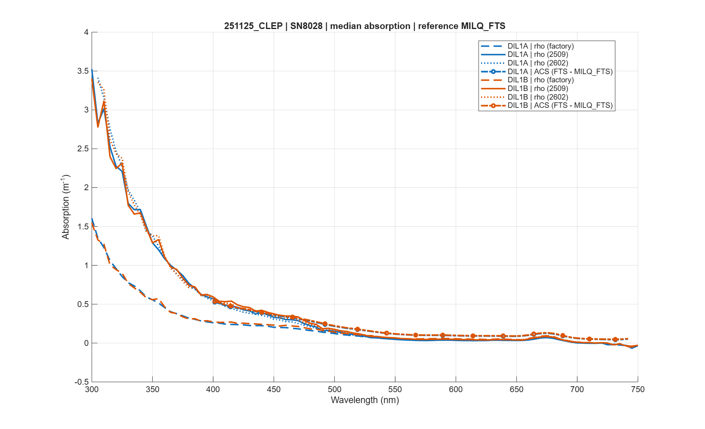
harrison/box_folders/main/results_bulk/20260930_132008_976/251125_CLEP/20251125_CLEP_comparison.pngOriginal local reference figures
These original PNGs are preserved in the earlier experiment and meeting folders. They are historical references, distinct from the latest batch above, and were not recalculated or redrawn with the current code.
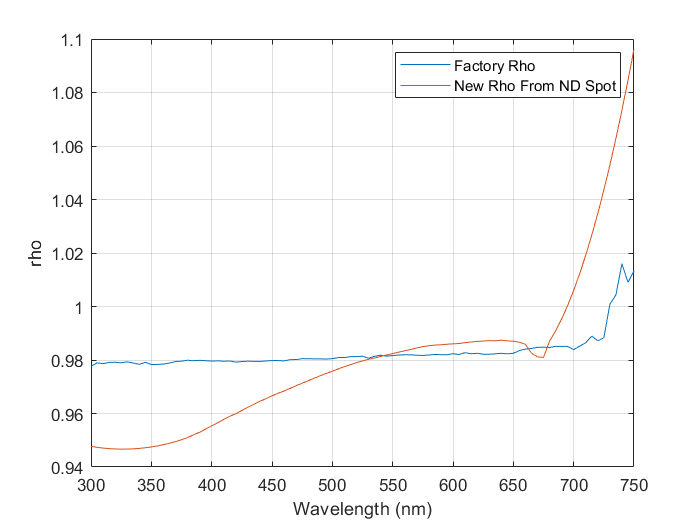
harrison/box_folders/Hyper-a_24Sept2025-calibrations/Hya8028_Rhoplots.png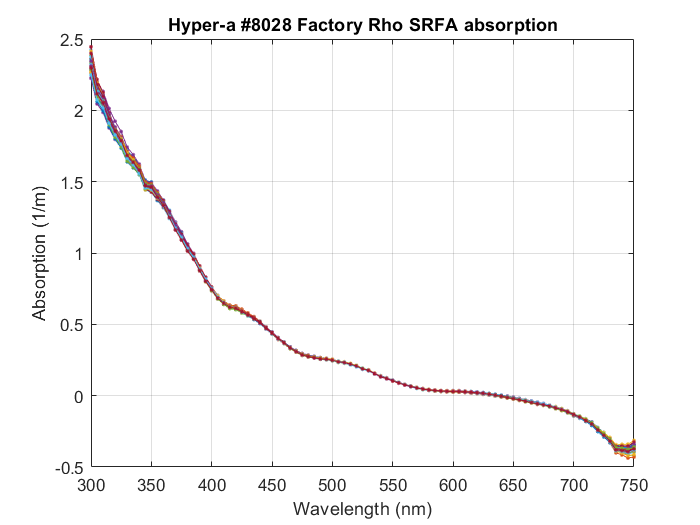
harrison/box_folders/Hyper-a_24Sept2025-calibrations/SRFA_factory.png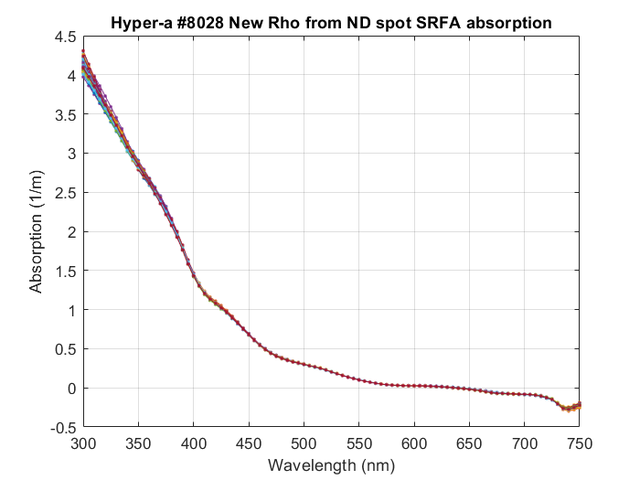
harrison/box_folders/Hyper-a_24Sept2025-calibrations/SRFA_newRho.png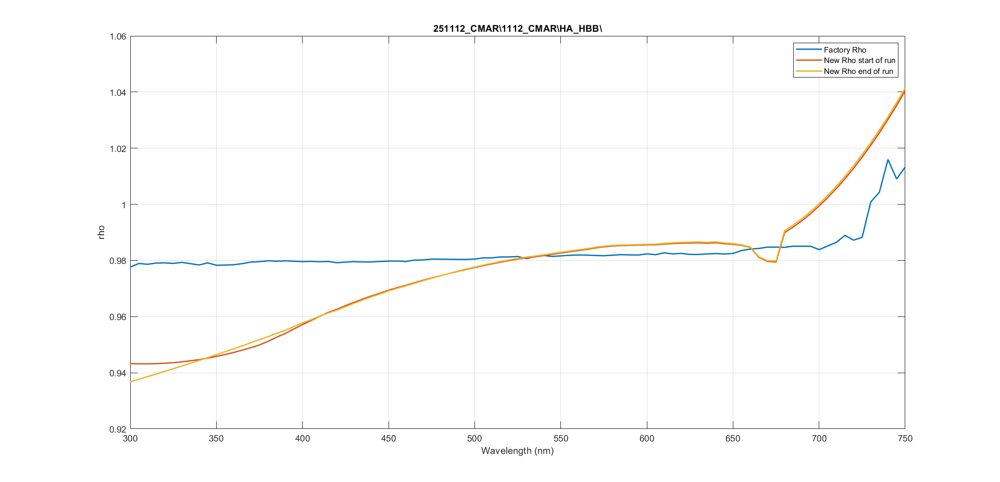
harrison/box_folders/Hypera_mtg_Feb2026/phytoblolom_rhoplots/1112CMAR_rhocompare.png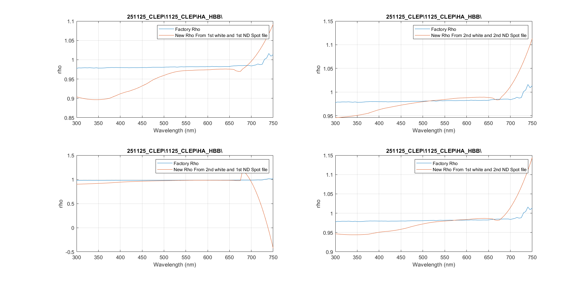
harrison/box_folders/Hypera_mtg_Feb2026/phytoblolom_rhoplots/1125CLEP_rhoplots.png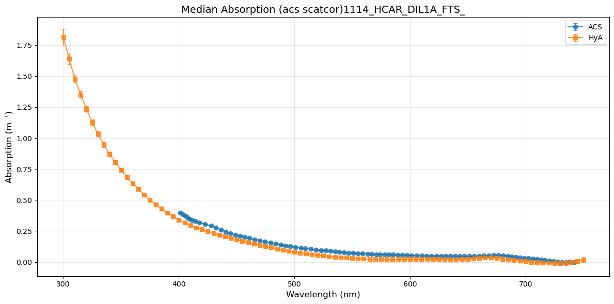
harrison/box_folders/Hypera_mtg_Feb2026/1114hcar_hya_acs.png